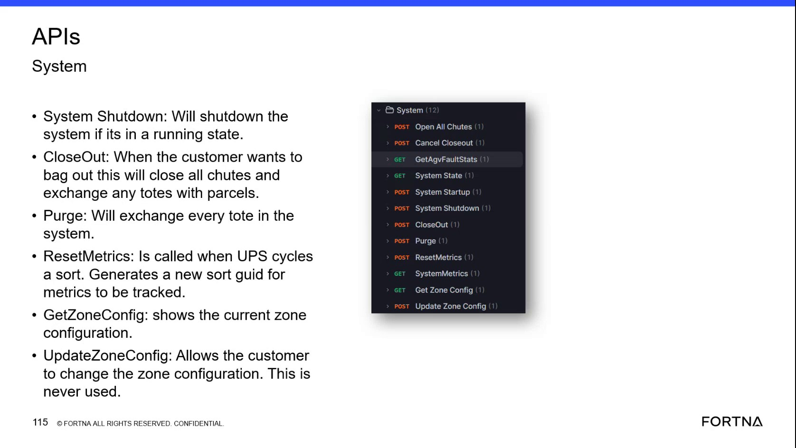

| Procedure ID | proc_start_optisweep_system_through_wcs_api_v1 |
|---|---|
| Title | Start OptiSweep System Through the WCS API |
| Procedure Type | recovery |
| Primary Role | L2_support |
| Support Safe | Yes |
| Capability Tags | fleet_system_status |
| Access Surface | wcs_api, apidog |
| Audience Roles | L2_support, L3_support |
| Failure Pattern Tags | None |
| Validation Status | needs_sme_review |
| Merge Status | source_finalized |
Use the OptiSweep / WCS API through Apidog or an equivalent approved API client to start the system from a shutdown state, then verify the live system state is no longer shutdown.
Use the OptiSweep / WCS API when the live system state is shutdown and an authorized L2 or L3 support user needs to start the system through the System Startup operation.

Responsible role: L2_support
Instruction:
Open the OptiSweep / WCS API in Apidog or an equivalent approved API client and locate POST System Startup in the System API list.
Expected result:
The System API list displays POST System Startup and GET System State.
Stop or Escalate If:
Responsible role: L2_support
Instruction:
In the OptiSweep / WCS API client, execute GET System State and inspect the returned current system state. Continue only when the returned state is shutdown.
Expected result:
GET System State returns shutdown as the current system state.
Stop or Escalate If:
Responsible role: L2_support
Instruction:
After confirming shutdown in the OptiSweep / WCS API, execute POST System Startup. Then execute GET System State again and inspect the returned state.
Expected result:
The startup request completes and the subsequent GET System State response returns the current post-startup state.
Stop or Escalate If:
Responsible role: L2_support
Instruction:
Compare the second GET System State result with the initial shutdown result in the OptiSweep / WCS API client.
Expected result:
The second GET System State result no longer reports shutdown, indicating that the system left the shutdown state.
Stop or Escalate If: